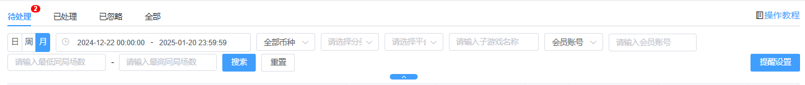
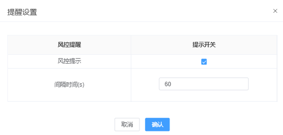
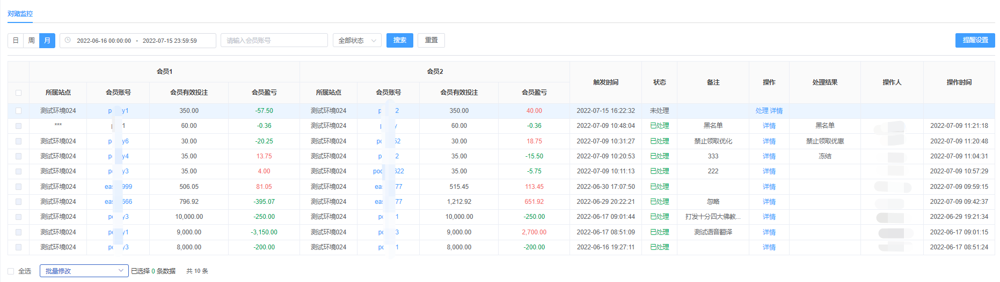
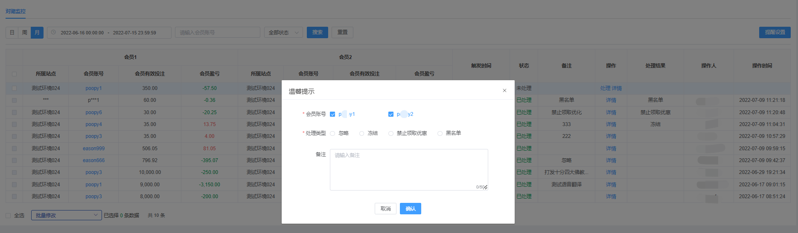
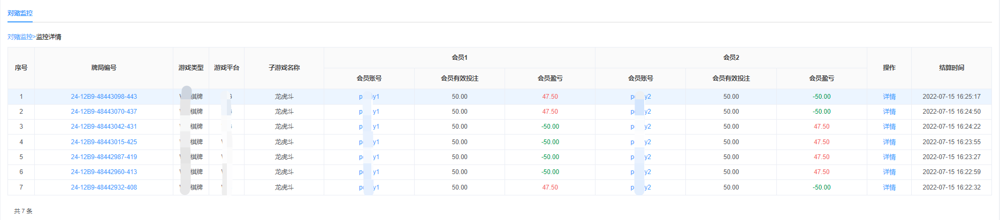
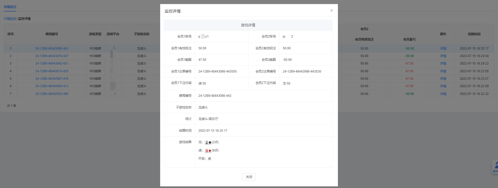

一、对赌监控
（1）功能说明：
1、数据监控四期——对赌监控-业主权限是新增在SAAS后台业主管理权限的功能，该功能主要作用是筛选出每个牌局中具有对赌可能性的会员，
业主可针对监控数据，单独对会员进行黑名单+冻结处理，从而防止会员对刷后向业主造成大额损失；
2、将此清单命名为可疑事件，在此可疑清单中进行相关性的处理；
3、该功能目前开放给集团管理员、公司管理员、站点管理员，主要针对于站点维度统计对赌相关数据；
（2）搜索说明：可根据品牌(多品牌站点才会有此搜索条件)/会员账号/会员ID/同局场数/游戏类型/游戏平台/子游戏名称 数据状态进行查询（状态包括：全部、待处理、已处理、已忽略）

（3）提醒设置：事件开启并触发对赌监控流程时进行异常数据提醒

（4）对赌监控-主界面：

4.1、对赌监控，站点管理员只允许查看自身站点的所属站点、会员账号、登录IP、会员有效投注、会员盈亏等信息。
4.2、无权限查看的信息【所属站点、登录IP、会员有效投注、会员盈亏】统一展示成3个“*”符号。
4.3、【会员账号】统一展示头字母和尾字母，中间无论长短统一展示3个“*”符号。
（5）对赌监控-处理页面：

5.1、如果站点管理员拥有两个会员账号的权限，则可以都勾选，否则只能勾选自己站点权限的会员账号
5.2、处理类型包括：忽略、冻结、禁止领取优惠、黑名单
5.3、备注长度限制于50个字符
（6）对赌监控-详情页面：


6.1、详情页面点击【牌局编号】可以跳转到-报表统计-投注记录查询注单详情
6.2、详情页面点击【会员账号】，在拥有管理权限时，可以弹窗出会员详情信息资料
6.3、详情页面点击【详情】按钮，可弹窗出牌局的详情信息